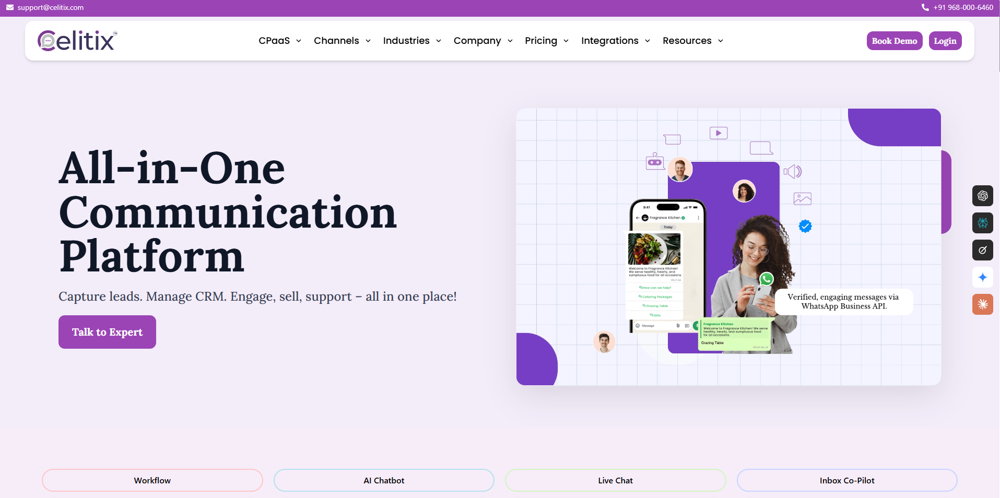

Content, copy, graphics, images, and web development for an Indian Pharmaceutical company.

All the content and copy for a Communication As A Service (CPaaS) company in Jaipur.
Worked with the designer, developers, SEO specialist, and ad manager to build the website.
